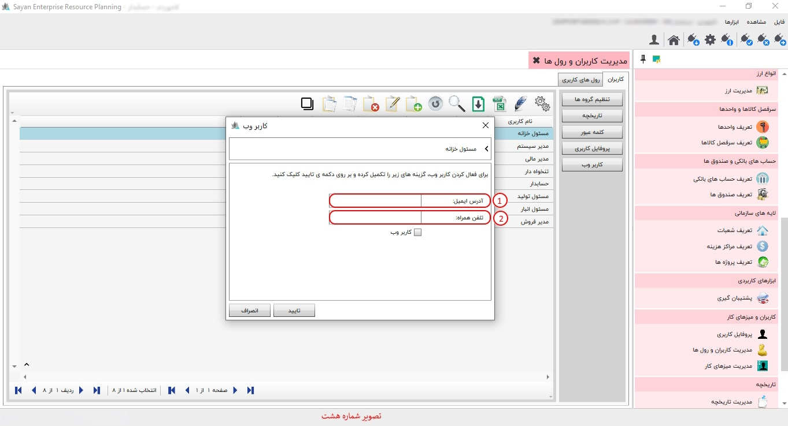

برای اعمال تنظیمات « مدیریت کابران و رول ها»، ابتدا بر روی دکمه «تنظیم کاربران کلیک کنید». همانطور که مشاهده می کنید، امکان نمایش و انتخاب « انواع رول ها» در این تصویر وجود دارد. شما می توانید بر حسب نیاز رول های کاربریتان را در حالت انتخاب قرار دهید.

برای ادامه مطلب به عکس شماره دوم مراجعه نمایید.

-کاربران(کادر شماره یک) :در این قسمت کاربرانی که تعریف کرده اید را می توانید مشاهده کنید.
-تنظیم گروه ها(|کادر شماره دوم):
-تاریخچه(کادر شماره سوم):
-کلمه عبور(کادر شماره چهارم):در این آیتم میتوانید کلمه ی عبور خود را وارد و تایید نمایید.
-پروفایل کاربری(کادر شماره پنجم):
-کاربر وب(کادر شماره ششم):
-کادر شماره هفتم:

امکان تعریف و دسترسی کاربران به وب سرویس نرم افزار «کاربر وب» با کلیک دکمه، برای شما فراهم گردیده است. همانگونه که در تصویر ذیل مشاهده می کنید، با ثبت آدرس ایمیل و شماره تلفن همراه کاربر موردنظرتان امکان پذیر است. لطفا گزینه «کاربر وب» را درحالت انتخاب قرار داده و دکمه تایید را کلیک کنید. 